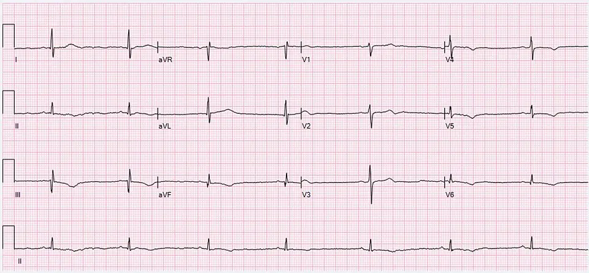

DX.7 — Polydipsie médicamenteuse (diurétiques, lithium, anticholinergiques)
1. Définition
La polydipsie médicamenteuse est une soif excessive causée par un médicament, avec une consommation de liquides augmentée (CIM-10, R63.1)14. Trois voies la produisent. La première est une polyurie rénale induite par le lithium (Lithiofor®). La deuxième est une perte hydrosodée par diurétiqueMédicament qui augmente l'excrétion urinaire de sodium et d'eau.. La troisième est une bouche sèche anticholinergique. Le diagnostic se pose après arrêt ou changement du médicament.
2. Épidémiologie (Suisse, puis Europe)
Sous lithium, les symptômes de diabète insipide néphrogénique (polydipsie, polyurie) sont très fréquents : ils touchent 10 à 25 % des patients traités1. La soif et la polyurie initiales touchent 30 à 50 % d'entre eux (AIPS, notice suisse du Lithiofor®)1. Les diurétiques de l'anse déclenchent une hypovolémie, surtout chez le sujet âgé et l'enfant (AIPS, notice suisse du Lasix®)2.
| Groupe | Pourquoi il est à risque | Enjeu |
|---|---|---|
| Patient traité par lithium depuis des années | Le défaut de concentration urinaire croît avec la durée du traitement12. | Risque de déshydratation puis d'intoxication par le lithium |
| Sujet âgé sous diurétique | L'hyponatrémie sous thiazidiqueDiurétique qui bloque le cotransporteur sodium-chlore du tube distal. compte parmi les causes principales chez le sujet âgé15. | Confusion, chute, convulsions |
| Patient psychiatrique polymédiqué | Les antipsychotiques, les antidépresseurs et les antiparkinsoniens dessèchent la bouche ou élèvent la glycémie. | Soif attribuée à tort au trouble psychiatrique |
| Femme enceinte sous lithium | La notice suisse ne distingue pas le risque selon le sexe, alors que la grossesse modifie la conduite, car le lithium expose l'embryon à des malformations cardiaques1. | Conduite adaptée à la grossesse |
| Patient en intoxication grave au lithium | La mortalité reste faible, mais l'intoxication grave peut conduire au coma, voire à la mort1. | Sécurité thérapeutique et diagnostic de diabète insipide manqué à tort |
3. Physiopathologie
La soif a deux déclencheurs : l'osmolalité plasmatiqueConcentration en particules actives du plasma. Une élévation stimule l'ADH et la soif. élevée et la baisse du volume circulant. Un médicament peut activer chacun d'eux ou imiter la soif.
Voie 1 : lithium et polyurie rénale. Le niveau moléculaire vient d'abord, puis le niveau cellulaire, le niveau tissulaire et enfin le niveau clinique121011. L'amorce moléculaire : le lithium entre dans les cellules principales du tube collecteur, par la voie que bloque l'amiloride12. Le développement cellulaire : il réduit l'expression de l'AQP2 et la réponse au récepteur V210,12. L'installation tissulaire : l'urine reste diluée malgré l'ADH, d'où un diabète insipide néphrogéniqueLe rein ne répond plus à l'ADH et élimine de grands volumes d'urine diluée.10. Le maintien clinique : la polyurie provoque une hyperosmolalité plasmatique qui entretient la soif. Les patients du suivi décrit éliminaient 4,7 L d'urine par 24 heures11.
Voie 2 : diurétiques et perte de volume. Le Lasix® bloque le cotransporteur sodium-potassium-2 chlore de l'anse de Henle2. La diurèse excessive provoque une hypovolémie. Celle-ci stimule la soif par l'angiotensine IIHormone qui contracte les vaisseaux, retient le sodium et stimule la soif.. Les Esidrex® peuvent aussi abaisser la natrémie et déclencher un tableau proche du SIADH153.
Voie 3 : anticholinergiques et sécheresse buccale. Le blocage muscarinique réduit la sécrétion salivaire15. La xérostomieSécheresse de la bouche par manque de salive. déclenche une soif sans déficit osmotique. L'Oxybutynin Macure cause surtout une bouche sèche4. L'Akineton® la provoque rarement5. La Leponex® la provoque fréquemment, et elle peut aussi élever la glycémie jusqu'au coma hyperosmolaire6.
| Lésion ou perturbation | Exploration qui la montre | Thérapeutique et mécanisme |
|---|---|---|
| Résistance du tube collecteur à l'ADH (lithium) | Osmolalité urinaire basse après privation d'eau | Diminuer ou changer le lithium ; l'amiloride réduit l'entrée du lithium dans la cellule et diminue la polyurie11,12 |
| Hypovolémie par diurétique | Hypotension orthostatique, urée et créatinine élevées | Réduire ou arrêter le diurétique ; remplacer les pertes |
| Hyponatrémie par thiazidique | Natrémie inférieure à 135 mmol/L11 | Arrêter le thiazidique ; corriger lentement |
| Salive réduite (anticholinergique) | Muqueuse sèche, natrémie et osmolalité normales | Réduire la dose ou changer de molécule ; soins de bouche |
| Hyperglycémie (clozapine) | Glycémie élevée | Traiter le diabète ; revoir le médicament |
Ces mécanismes expliquent les complications. L'hypovolémie diminue l'excrétion rénale du lithium et le fait monter vers la toxicité1. La polyurie sans accès à l'eau conduit à la déshydratation hypernatrémique.
4. Démarche diagnostique
L'ordre suit la gravité, puis la fréquence. Le médecin écarte d'abord les urgences, puis relie la soif au médicament.
🚩 D1 — Intoxication au lithiumTremblement, ataxie, nystagmus, confusion, vomissements et diarrhée, avec une lithiémie élevée. constitue une urgence. Le signe qui tranche est la lithiémie à partir de 1,5 mmol/L, avec signes neurologiques1. Le piège : des signes toxiques peuvent apparaître à des taux thérapeutiques chez le sujet sensible. La conduite consiste à arrêter le lithium sans délai et à hospitaliser le patient.
🚩 D2 — Hyponatrémie symptomatiqueNatrémie inférieure à 135 mmol/L avec nausées, confusion, céphalées ou convulsions : l'œdème cérébral menace. constitue une urgence14. Le signe qui tranche est la natrémie, avec les symptômes15. Le piège : un thiazidique à dose faible suffit chez le sujet âgé15. La conduite est un avis intensif si les symptômes sont sévères.
🚩 D3 — Déshydratation avec hypotensionPression artérielle basse debout, tachycardie, oligurie : l'insuffisance rénale aiguë et la toxicité du lithium suivent. constitue une urgence. Le signe qui tranche est la chute de pression artérielle à la position debout avec créatinine élevée. Le piège : les AINS et les IEC aggravent le tableau. La conduite consiste à réhydrater et à suspendre le diurétique, AINS et IEC.
🚩 D4 — Hyperglycémie sévère sous antipsychotiqueSoif, polyurie, déshydratation et troubles de conscience : acidocétose ou coma hyperosmolaire possibles. constitue une urgence. Le signe qui tranche est la glycémie capillaire. Le piège : la clozapine peut déclencher un diabète chez un patient sans antécédent6. La conduite est l'urgence métabolique (DX.9, DX.10)6.
🚩 D5 — Toxidrome anticholinergiqueMydriase, peau chaude et sèche, rougeur du visage, tachycardie, rétention urinaire, agitation. constitue une urgence. Le signe qui tranche est l'association peau sèche, mydriase et globe vésical. Le piège : la bouche sèche seule est banale. La conduite consiste à arrêter l'agent et à surveiller l'ECG.
🚩 D6 — HypercalcémieCalcémie élevée : polyurie par diabète insipide néphrogénique secondaire, soif, constipation, confusion. sous lithium aggrave la polyurie. Le lithium cause très fréquemment une hypercalcémie1. Le signe qui tranche est la calcémie ionisée. La conduite est le bilan de la parathyroïde (DX.5)1.
Sans drapeau rouge, six étapes mènent au diagnostic.
- Listez tous les médicaments, y compris ceux sans ordonnance, avec leurs dates de début et de changement.
- Il faut chiffrer la consommation de boissons et le volume urinaire sur 24 heures14.
- Il faut doser la natrémie, l'osmolalité plasmatique, la glycémie, la créatinine, la calcémie et la lithiémie.
- Mesurez l'osmolalité urinaire : sa valeur sépare soif primaire et polyurie vraie.
- Corrigez ou arrêtez le médicament suspect ; la soif doit régresser en quelques jours.
- Si la soif persiste, passez au test de restriction hydrique encadré ou à la copeptine (voir DX.4)14.
| Diagnostic | Signe ou examen qui tranche | Piège |
|---|---|---|
| Intoxication au lithium | Lithiémie ≥ 1,5 mmol/L1 | Toxicité possible à lithiémie thérapeutique |
| Diabète insipide central | Osmolalité urinaire basse, réponse à la desmopressine | La Minirin® est interdite en polydipsie primaire7 |
| Diabète sucré | Glycémie élevée | Induit par la clozapine |
5. Anamnèse ciblée et drapeaux rouges
Pour la polydipsie médicamenteuse, l'interrogatoire suit les questions clés de l'anamnèse, chacune avec sa raison physiopathologique.
Les drapeaux rouges imposent l'urgence, car chacun annonce une complication grave.
Les drapeaux rouges de la polydipsie médicamenteuse et leur conduite immédiate s'ouvrent dans la fenêtre drapeaux rouges, signification et action immédiate.
6. Examen physique ciblé, région par région
Le normal précède le pathologique dans chaque région. Un signe cliquable donne sa technique, sa valeur et son piège. Aucun signe isolé ne suffit chez le sujet âgé : la bouche sèche, la soif et la fréquence cardiaque ne sont pas fiables seules. L'association de la fatigue et de boissons omises entre les repas atteint une sensibilité de 0,71 et une spécificité de 0,92 (une étude de 71 sujets)16.
L'examen ciblé recherche d'abord : constantes, bouche et peau et yeux. Il recherche enfin : système nerveux, cou et abdomen. Pour la polydipsie médicamenteuse, chaque fenêtre décrit le signe, la technique et l'aspect.
La fenêtre langue sèche chez un patient déshydraté montre l'image interprétée en regard de son cliché brut.
7. Approche syndromique
7.1 Syndrome polyuro-polydipsique par diabète insipide néphrogénique (lithium) se décrit ainsi10. Les signes fonctionnels sont : soif intenseBesoin impérieux de boire, y compris la nuit., nycturieBesoin d'uriner la nuit., urines abondantes et claires10. Les signes physiques sont : diurèse élevéeVolume urinaire de 24 heures augmenté ; mesuré dans un récipient gradué., muqueuses sèches si l'accès à l'eau manque10. Le mécanisme est l'insensibilité du tube collecteur à l'ADH10. Pour rechercher la polyurie, le médecin compte le volume urinaire sur 24 h dans un récipient gradué10.
7.2 Syndrome de déplétion volumique (diurétique) se décrit ainsi10. Les signes fonctionnels sont : soif, vertiges orthostatiquesSensation de tête vide au passage à la position debout, par baisse de la perfusion cérébrale., faiblesse. Les signes physiques sont : hypotension orthostatique, tachycardiePouls au repos supérieur à 100 par minute ; compense la baisse du volume., perte de poids10. Le mécanisme est la perte hydrosodée. La manœuvre consiste à mesurer la pression couchée puis debout.
7.3 Syndrome sec anticholinergique se décrit ainsi10. Les signes fonctionnels sont : bouche sèche, soif, vision floueTrouble de l'accommodation par paralysie du muscle ciliaire., constipation. Les signes physiques sont : muqueuse sèche, mydriase, globe vésical. Le mécanisme est le blocage muscarinique. La manœuvre consiste à regarder la langue et à percuter l'hypogastre.
7.4 Syndrome d'hyponatrémie (thiazidique) se décrit ainsi14. Les signes fonctionnels sont : nausées, céphalées, confusionTrouble de l'attention et de l'orientation ; apparaît quand la natrémie baisse vite., crampes14. Les signes physiques sont : désorientation, convulsionsCrises motrices généralisées par œdème cérébral.. Le mécanisme est la rétention d'eau libre14,15. La manœuvre consiste à évaluer l'état mental, puis à doser la natrémie.
7.5 Syndrome d'hyperglycémie. Les signes fonctionnels sont : soif, polyurie, fatigue15. Les signes physiques sont : déshydratation, respiration de KussmaulRespiration ample et rapide qui élimine le CO2 en cas d'acidose. si acidocétose. Le mécanisme est la diurèse osmotique par le glucose.
Les syndromes de la polydipsie médicamenteuse, avec leurs signes et leur mécanisme, figurent dans la fenêtre syndromes, signes fonctionnels et signes physiques.
8. Diagnostic positif et critères
Trois définitions de société savante cadrent le diagnostic. La recommandation européenne de 2014 (ESE, ESICM, ERA-EDTA) définit l'hyponatrémie par une natrémie inférieure à 135 mmol/L14. La revue Cochrane de 2015 retient une osmolalité sérique de 295 mOsm/kg ou plus comme déshydratation par perte d'eau16. L'AIPS fixe la lithiémie cible à 0,6 à 1,0 mmol/L1. Le raisonnement clinique retient quatre éléments (critères d'imputabilité : majeurs).
- La soif commence après le début ou l'augmentation du médicament.
- Le mécanisme pharmacologique est connu (voir point 3).
- La soif régresse après arrêt ou diminution du médicament (dechallenge).
- Les autres causes de polydipsie sont écartées par le bilan.
| Mesure | Seuil | Signification |
|---|---|---|
| Lithiémie thérapeutique | 0,6 à 1,0 mmol/L14161 | Zone cible |
| Lithiémie toxique | ≥ 1,5 mmol/L | Arrêt immédiat |
| Osmolalité urinaire après privation d'eau | > 750 mOsm/kg | Concentration normale |
| Osmolalité urinaire | 300 à 750 mOsm/kg1416 | Diabète insipide néphrogénique partiel |
| Osmolalité urinaire | < 300 mOsm/kg | Diabète insipide néphrogénique complet |
| Natrémie | < 135 mmol/L | Hyponatrémie |
Ce qui ne suffit pas : une soif chez un patient sous médicament ne prouve pas la cause médicamenteuse. Un diabète, une hypercalcémie ou une polydipsie primaire peuvent coexister.
9. Examens complémentaires
9.a Gold standard. Il n'existe pas d'examen unique10. Le critère le plus fiable est clinique : la soif régresse à l'arrêt du médicament (dechallenge). Le test de restriction hydrique encadré précise le type de polyurie10.
9.b Première intention. Prescrivez : natrémie, kaliémie, osmolalité plasmatique, glycémie, créatinine avec DFGe, calcémie, lithiémie 12 h après la dernière prise, osmolalité urinaire, ECG1.
La fenêtre tracé de repos à douze dérivations montre l'image interprétée en regard de son cliché brut.
L'interprétation des résultats de la polydipsie médicamenteuse figure dans la fenêtre interprétation des résultats.
9.c Alternatives. Chez l'enfant, on ne conseille pas le lithium avant 12 ans1. En cas de grossesse, on n'administre pas le lithium. Si le DFGe est inférieur à 30 mL/min, l'AIPS indique que le lithium ne devrait en règle générale pas être prescrit en cas de néphropathie, car l'intoxication devient plus probable1. Les thiazidiques exigent aussi la prudence. Aucune injection de produit de contraste n'est nécessaire.
9.d Deuxième intention. Le test de restriction hydrique avec desmopressine se pratique en milieu hospitalier uniquement, avec contrôle de la natrémie et de l'hydratation7. Chez le patient sous lithium, ce test expose à la déshydratation et donc à l'intoxication ; c'est pourquoi la durée de privation reste courte et la lithiémie est suivie1. On dose aussi la copeptine (voir DX.4)1. On réalise une échographie rénale en cas de traitement par lithium de plus de 10 ans avec insuffisance rénale sévère1.
10. Arbre décisionnel
- Si confusion, tremblement grossier ou ataxie sous lithium → doser la lithiémie, faire l'ECG, hospitaliser.
- Si la natrémie est inférieure à 135 mmol/L avec symptômes, alors il faut un avis intensif ; sinon, il faut arrêter le thiazidique14.
- Si l'hypotension debout s'accompagne d'une oligurie, alors il faut réhydrater et suspendre le diurétique, l'AINS et l'IEC.
- Si la glycémie est très élevée, alors il faut traiter une urgence métabolique (DX.9, DX.10)14.
- Si la calcémie est élevée, alors il faut demander le bilan de parathyroïde (DX.5)14.
- Si la polyurie s'accompagne d'une osmolalité urinaire basse sous lithium, alors il faut réduire le lithium avec le psychiatre.
- Si la bouche est sèche avec une natrémie et une osmolalité normales, alors il faut revoir les anticholinergiques.
- Si la soif persiste après l'arrêt du médicament → chercher une cause primaire (DX.2, DX.4)14.
11. Prise en charge selon les recommandations suisses
11.A But thérapeutique. Le but est de maintenir la lithiémie entre 0,6 et 1,0 mmol/L1. La natrémie doit rester supérieure ou égale à 135 mmol/L14, et sa hausse reste limitée à 10 mmol/L pendant les 24 premières heures14. La soif disparaît en général en quelques jours après l'arrêt d'un diurétique ou d'un anticholinergique. En revanche, le diabète insipide néphrogénique dû au lithium peut persister longtemps après l'arrêt, car le défaut de concentration croît avec la durée du traitement12.
11.B Moyens.
Urgence 1 : l'intoxication au lithium impose cinq gestes dans cet ordre113.
- On arrête le lithium sans délai.
- On évalue la conscience et le rythme, on fait l'ECG, on dose la lithiémie et la créatinine.
- Rétablissez l'équilibre hydro-électrolytique avec du NaCl 0,9 % Sintetica ; il n'existe aucun antidote9.
- On évalue la dialyse : elle est recommandée si la lithiémie dépasse 4,0 mEq/L avec insuffisance rénale, ou si la conscience baisse, si des convulsions ou une arythmie menaçante surviennent13. Elle est suggérée à plus de 5,0 mEq/L ou en cas de confusion nette13.
- On continue l'épuration jusqu'à amélioration clinique ou lithiémie inférieure à 1,0 mEq/L13.
Urgence 2 : l'hyponatrémie sévère symptomatique impose trois gestes dans cet ordre14.
- On stoppe le thiazidique et toute perfusion hypotone.
- On administre un bolus de 150 mL de NaCl hypertonique à 3 % en 20 minutes, en soins intensifs14. On le répète jusqu'à une hausse de 5 mmol/L de la natrémie, selon la recommandation européenne14. Le NaCl 10 % B. Braun est la solution concentrée de l'AIPS, à diluer8.
- On limite la hausse à 10 mmol/L pendant les 24 premières heures, puis à 8 mmol/L par 24 heures, car une correction trop rapide provoque une myélinolyse osmotique14.
Urgence 3 : déshydratation avec hypotension. En cas de déshydratation avec hypotension, on perfuse du NaCl 0,9 % Sintetica ; l'AIPS indique 9 mL/min chez l'adulte9. On contrôle ensuite la natrémie, la créatinine et la lithiémie.
Hors urgence.
- Mesures générales. Supprimez l'agent en cause ou réduisez sa dose. Chez le patient sous lithium, ne restreignez pas l'eau : la déshydratation pousse à la toxicité1. Il faut assurer un apport suffisant en sel et en eau.
- Pharmacologique. Pour le lithium, on ajuste la dose avec le psychiatre. On essaie l'amiloride pour réduire la polyurie : la diurèse passe de 4,7 à 3,1 L par jour11. Comme l'amiloride est un diurétique épargneur de potassium, il peut élever la lithiémie et la kaliémie, c'est pourquoi la lithiémie et la kaliémie se contrôlent après son introduction11. L'Esidrex® a l'indication AIPS de diabète insipide néphrogénique, mais il augmente la lithiémie31. La Minirin® ne corrige pas un diabète insipide néphrogénique, car l'ADH est inefficace10. Pour le diurétique, on change pour une dose plus faible ou une autre classe15. Pour l'anticholinergique, on réduit la dose. L'Oxybutynin Macure se remplace par un antimuscarinique qui dessèche moins la bouche (toltérodine, solifénacine) ou par le mirabégron (Betmiga®), un agoniste bêta-3 qui ne dessèche pas la bouche4.
- Non pharmacologique. Les soins de bouche, les boissons fréquentes en petites quantités et la gomme sans sucre sont des mesures usuelles. Une pesée quotidienne permet de suivre l'hydratation.
| Molécule (spécialité®) | Dose AIPS | Voie | Contre-indication ou précaution majeure |
|---|---|---|---|
| Lithium (Lithiofor®) | Lithiémie cible 0,6 à 1,0 mmol/L, prélevée 12 h après la dernière prise1 | Orale (comprimés) | Grossesse, néphropathie, enfant de moins de 12 ans non conseillé |
| Furosémide (Lasix®) | Adulte : ½ à 2 comprimés par jour au début ; enfant : 2 mg/kg jusqu'à 40 mg par jour2 | Orale (comprimés) | Coma hépatique |
| Hydrochlorothiazide (Esidrex®) | Diabète insipide néphrogénique : 100 mg par jour en 2 à 4 prises chez l'adulte, kaliémie surveillée3 | Orale | Élève la lithiémie ; hyponatrémie du sujet âgé |
| Oxybutynine (Oxybutynin Macure) | 2,5 mg 3 fois par jour au début, maximum 20 mg par jour4 | Orale | Bouche sèche anticholinergique |
| Desmopressine (Minirin®) | Diabète insipide central : 0,1 mg 3 fois par jour au début7 | Orale (comprimés) | Polydipsie primaire, hyponatrémie, clairance de la créatinine inférieure à 50 mL/min |
| NaCl 0,9 % (Sintetica) | 9 mL/min chez l'adulte9 | Perfusion intraveineuse | Contrôle de la natrémie, de la créatinine et de la lithiémie |
| NaCl 10 % (B. Braun) | Solution concentrée à diluer8 | Perfusion intraveineuse | Correction limitée à 10 mmol/L pendant les 24 premières heures14 |
| Amiloride | Aucune spécialité à l'amiloride dans l'AIPS : la posologie se fixe avec le néphrologue et le psychiatre | Orale | Contrôle de la lithiémie et de la kaliémie après l'introduction11 |
Contre-indications du lithium : selon l'AIPS, le lithium ne devrait en règle générale pas être prescrit en cas de néphropathie, de maladie cardiovasculaire ou d'hypothyroïdie non traitée1. Il ne devrait pas non plus l'être en cas de troubles du bilan hydrosodique par déshydratation, de régime hyposodé ou de maladie d'Addison1. Ces patients présentent un risque accru d'intoxication par le lithium1.
Situations spéciales. Grossesse : l'AIPS indique des indices clairs de risque pour l'embryon avec le lithium, surtout des malformations cardiaques comme le syndrome d'Ebstein1. Il ne doit pas être administré, surtout au 1er trimestre1. L'allaitement est contre-indiqué. Sujet âgé : le lithium se prescrit avec prudence. Chez l'enfant, on ne conseille pas le lithium avant 12 ans1. Le Lasix® se donne à 2 mg/kg jusqu'à 40 mg par jour2. Insuffisance rénale : le lithium est déconseillé en cas de néphropathie ; la Minirin® est contre-indiquée à une clairance inférieure à 50 mL/min71. Insuffisance hépatique : le furosémide est contre-indiqué en cas de coma hépatique2.
Social et professionnel. Un arrêt de travail est justifié en cas d'intoxication. La conduite automobile est déconseillée en cas de somnolence, de vertiges ou de vision floue. L'assurance-maladie (LAMal) couvre le traitement.
11.C Surveillance. La lithiémie se contrôle le 8e jour, puis chaque semaine le premier mois1. Elle se contrôle ensuite tous les 15 jours les mois 2 et 3, puis chaque mois, et tous les 2 mois après 6 mois1. Avant le lithium, on mesure la créatinine et la TSH, et on fait un sédiment urinaire. Les seuils d'arrêt sont : lithiémie ≥ 1,5 mmol/L, signes neurologiques, vomissements ou diarrhée1.
11.D Pronostic. Le tableau régresse en général à l'arrêt de l'agent, mais le diabète insipide néphrogénique dû au lithium peut persister après un traitement long1. Une néphropathie tubulo-interstitielle irréversible existe, très rarement, après un traitement prolongé.
Quatre critères de guérison se vérifient. La soif régresse après l'arrêt ou la réduction du médicament, et le volume urinaire quotidien redevient normal. La natrémie reste supérieure ou égale à 135 mmol/L14. La lithiémie reste entre 0,6 et 1,0 mmol/L chez le patient qui poursuit le lithium1. Le patient sort lorsque sa conscience est normale, que l'hydratation est rétablie, que la natrémie est stable et que la lithiémie est inférieure à 1,0 mEq/L, seuil d'arrêt de l'épuration13.
12. Prévention
Primaire. Avant le lithium, on dose la créatinine, la TSH et le sédiment urinaire. Il faut instruire le patient : il interrompt le lithium et consulte en cas de polydipsie, de polyurie ou de signes toxiques. Il garde un apport suffisant en sel et en eau, et ne double jamais une dose oubliée. Les thiazidiques se prescrivent à faible dose chez le sujet âgé15.
Secondaire. On contrôle la lithiémie, la natrémie et la créatinine selon le calendrier AIPS1. On dépiste l'hypercalcémie et l'hypothyroïdie.
Tertiaire. Après une intoxication, on révise les interactions (AINS, IEC, sartans, diurétiques). On fait une échographie rénale régulière en cas d'insuffisance rénale sévère après plus de 10 ans de lithium1.
13. Points clés
- Un patient sous lithium qui boit et urine beaucoup a un diabète insipide néphrogénique jusqu'à preuve du contraire.
- Une lithiémie à 1,5 mmol/L ou plus impose l'arrêt immédiat du lithium1.
- Un patient sous lithium ne subit pas de restriction hydrique thérapeutique, car la déshydratation pousse à l'intoxication ; seul un test diagnostique hospitalier surveillé reste possible.
- Chez le sujet âgé, un thiazidique peut abaisser la natrémie, qu'on corrige lentement.
- La desmopressine est interdite en cas de polydipsie primaire.
14. Pièges et questions fréquentes à l'examen fédéral suisse
Quelle lithiémie cible faut-il viser ? Réponse : 0,6 à 1,0 mmol/L, prélevée 12 h après la dernière prise1.
À quel seuil la toxicité du lithium est-elle attendue ? Réponse : dès 1,5 mmol/L, parfois plus bas chez le sujet sensible1.
Quels médicaments font monter la lithiémie ? Réponse : AINS, IEC, sartans, diurétiques de l'anse et épargneurs de potassium ; les thiazidiques aussi.
Peut-on donner de la desmopressine au patient polydipsique primaire ? Réponse : non, c'est contre-indiqué à cause du risque d'hyponatrémie.
La desmopressine corrige-t-elle le diabète insipide du lithium ? Réponse : non, car le rein ne répond plus à l'ADH10.
Quel diurétique a une indication AIPS dans le diabète insipide néphrogénique ? Réponse : l'hydrochlorothiazide, mais il élève la lithiémie31.
Quelle est la limite de correction de la natrémie par jour ? Réponse : 10 mmol/L au maximum par jour14.
Quand dialyser une intoxication au lithium ? Réponse : si la lithiémie dépasse 4,0 mEq/L avec insuffisance rénale, ou si la conscience baisse, quel que soit le taux13.
Une bouche sèche avec natrémie normale oriente vers quoi ? Réponse : elle évoque une soif anticholinergique, et non un diabète insipide.
| Question | Réponse | Raison |
|---|---|---|
| La desmopressine corrige-t-elle le diabète insipide du lithium ? | Non | Le rein ne répond plus à l'ADH10 |
| Faut-il restreindre l'eau d'un patient polyurique sous lithium ? | Non | La déshydratation fait monter la lithiémie et pousse à la toxicité1 |
| À partir de quelle lithiémie la toxicité est-elle attendue ? | 1,5 mmol/L | Des signes neurologiques apparaissent1 |
| Peut-on corriger vite une hyponatrémie ? | Non, au maximum 10 mmol/L par 24 heures | Une correction trop rapide provoque une myélinolyse osmotique14 |
| Que signifie une bouche sèche avec natrémie normale ? | Une soif anticholinergique | Le blocage muscarinique réduit la salive sans déficit osmotique |
Sources bibliographiques
- [S1] AIPS, Lithiofor® (OM Pharma), n° Swissmedic 38061, texte professionnel, consulté le 27.10.2026.
- [S2] AIPS, Lasix® comprimés (Sanofi-Aventis), n° 30629 et 30630, consulté le 27.10.2026.
- [S3] AIPS, Esidrex® (Medius), n° 24958, consulté le 27.10.2026.
- [S4] AIPS, Oxybutynin Macure, n° 70200, consulté le 27.10.2026.
- [S5] AIPS, Akineton®, n° 24035, consulté le 27.10.2026.
- [S6] AIPS, Leponex®, n° 37491, consulté le 27.10.2026.
- [S7] AIPS, Minirin® comprimés, n° 49002, consulté le 27.10.2026.
- [S8] AIPS, NaCl 10 % B. Braun, n° 29555, consulté le 27.10.2026.
- [S9] AIPS, NaCl 0,9 % Sintetica, n° 52041, consulté le 27.10.2026.
- [S10] Bockenhauer D, Bichet DG. Pathophysiology, diagnosis and management of nephrogenic diabetes insipidus. Nat Rev Nephrol 2015 ; 11 : 576-88. PMID 26077742. Consulté le 27.10.2026.
- [S11] Batlle DC et al. Amelioration of polyuria by amiloride in patients receiving long-term lithium therapy. N Engl J Med 1985 ; 312 : 408-14. PMID 3969096. Consulté le 27.10.2026.
- [S12] Bedford JJ et al. Lithium-induced nephrogenic diabetes insipidus: renal effects of amiloride. Clin J Am Soc Nephrol 2008 ; 3 : 1324-31. PMID 18596116. Consulté le 27.10.2026.
- [S13] Decker BS et al. Extracorporeal treatment for lithium poisoning: recommendations from the EXTRIP workgroup. Clin J Am Soc Nephrol 2015 ; 10 : 875-87. PMID 25583292. Consulté le 27.10.2026.
- [S14] Spasovski G et al. Clinical practice guideline on diagnosis and treatment of hyponatraemia (ESE, ESICM, ERA-EDTA). Eur J Endocrinol 2014 ; 170 : G1-47. PMID 24569125. Consulté le 27.10.2026.
- [S15] Liamis G et al. Thiazide-associated hyponatremia in the elderly. J Geriatr Cardiol 2016 ; 13 : 175-82. PMID 27168745. Consulté le 27.10.2026.
- [S16] Hooper L et al. Clinical symptoms, signs and tests for identification of water-loss dehydration in older people. Cochrane Database Syst Rev 2015 ; CD009647. PMID 25924806. Consulté le 27.10.2026.
Questions clés de l'anamnèse
| Question | Raison | Décision |
|---|---|---|
| Quel médicament a commencé ou changé de dose avant la soif ? | Un lien temporelLe début de la soif suit de peu l'introduction ou l'augmentation du médicament : argument de causalité. suggère la cause médicamenteuse. | Réduire ou changer le médicament |
| Combien de litres buvez-vous, et combien urinez-vous ? | Un volume urinaire élevé indique une polyurieDiurèse de 24 heures nettement augmentée, en général au-delà de 3 litres. vraie, un volume normal une soif isolée14. | Mesurer la diurèse de 24 h14 |
| La bouche est-elle sèche ? Buvez-vous par petites gorgées ? | Une bouche sèche sans polyurie évoque un anticholinergiqueMédicament qui bloque le récepteur muscarinique de l'acétylcholine : bouche sèche, rétention urinaire, mydriase.. | Lister les anticholinergiques |
| Vomissements, diarrhée, fièvre, canicule récents ? | Ils réduisent l'excrétion du lithium et font monter la lithiémieConcentration sanguine de lithium en mmol/L, mesurée 12 heures après la dernière prise.1. | Doser la lithiémie |
| Prenez-vous un AINS, un IEC ou un sartan ? | Ces médicamentsAINS, inhibiteurs de l'enzyme de conversion et sartans réduisent l'élimination rénale du lithium. élèvent la lithiémie. | Suspendre l'association |
| Tremblement, démarche instable, confusion ? | Ils signent une toxicité neurologiqueAtteinte du cerveau et du cervelet par le lithium : tremblement, ataxie, nystagmus, confusion. du lithium. | Urgence : lithiémie, ECG |
| Antécédent de diabète ou de maladie thyroïdienne ? | Le lithium cause goitreAugmentation de volume de la thyroïde. et hypothyroïdie. | Doser glycémie et TSH |
| Grossesse prévue ou allaitement en cours ? | Le lithium est tératogèneIl augmente le risque de malformation de l'embryon, surtout cardiaque. ; l'allaitement est contre-indiqué. | Avis psychiatrique |
Drapeaux rouges, signification et action immédiate
| Drapeau rouge | Signification | Action immédiate |
|---|---|---|
| Confusion, convulsions, ataxie, tremblement grossier | Toxicité neurologique du lithium1 | Lithiémie et ECG immédiats, arrêt du lithium, hospitalisation |
| Natrémie basse symptomatique | Hyponatrémie symptomatique, œdème cérébral menaçant14 | Avis intensif, arrêt du thiazidique |
| Hypotension debout avec oligurie | Déplétion volumique, risque d'insuffisance rénale aiguë et de toxicité du lithium | Réhydratation, suspension du diurétique, de l'AINS et de l'IEC |
| Glycémie très élevée | Hyperglycémie sévère, acidocétose ou coma hyperosmolaire possibles | Urgence métabolique |
| Hypercalcémie symptomatique | Diabète insipide néphrogénique secondaire à l'hypercalcémie | Hospitalisation, bilan de la parathyroïde |
Constantes
| Normal attendu | Signes pathologiques |
|---|---|
| Pression stable couché et debout, pouls régulier, température normale | Hypotension orthostatiqueTechnique : mesurer couché 5 min, puis debout à 1 et 3 min. Valeur : une chute marquée indique une hypovolémie. Piège : elle manque sous bêtabloquant ou en cas de neuropathie. · PoidsTechnique : peser le matin, à jeun, même balance. Valeur : une perte de plusieurs kilos en quelques jours indique une perte liquidienne. Piège : un œdème masque la perte16. |
Bouche et peau
| Normal attendu | Signes pathologiques |
|---|---|
| Muqueuse humide, salive visible sous la langue | Muqueuse sècheTechnique : regarder la langue et le plancher buccal. Valeur : soutient une xérostomie anticholinergique. Piège : seule, elle est peu fiable chez le sujet âgé16. · Pli cutanéTechnique : pincer la peau du front ou du sternum. Valeur : un pli persistant évoque une déshydratation. Piège : la peau du sujet âgé a perdu son élasticité. |
Yeux
| Normal attendu | Signes pathologiques |
|---|---|
| Pupilles rondes, réactives, de taille moyenne | MydriaseTechnique : éclairer la pupille avec une lampe. Valeur : pupille large et peu réactive : toxidrome anticholinergique. Piège : les collyres dilatants la provoquent. |
Système nerveux
| Normal attendu | Signes pathologiques |
|---|---|
| Orientation normale, pas de tremblement, démarche stable | Tremblement finTechnique : bras tendus, mains écartées, 30 secondes. Valeur : fréquent au début du lithium ; un tremblement grossier signe la toxicité. Piège : l'anxiété et la caféine le renforcent. · Ataxie et nystagmusTechnique : marche talon-pointe ; suivre le doigt du regard. Valeur : signes de toxicité du lithium. Piège : l'alcool et les sédatifs donnent le même tableau16. |
Abdomen
| Normal attendu | Signes pathologiques |
|---|---|
| Souple, vessie non palpable | Globe vésicalTechnique : percuter l'hypogastre à la recherche d'une matité. Valeur : rétention urinaire anticholinergique. Piège : la polyurie masque la rétention. |
Langue sèche chez un patient déshydraté
Langue sèche chez un patient déshydraté. Cette photographie de la cavité buccale montre un signe visible de la région bouche.

Lisez d'abord seul ce cliché (langue sèche chez un patient déshydraté) : cherchez vous-même le signe.
La copie annotée (langue sèche chez un patient déshydraté) montre les repères décrits ci-dessous.
- Le dos de la langue est sec, rouge et dépoli, sans salive visible.
- Un revêtement blanchâtre recouvre le bord de la langue.
- Chez le sujet âgé, la bouche sèche seule n'est pas fiable : elle se lit avec la natrémie, l'osmolalité et la pression artérielle.
- Un anticholinergique donne une bouche sèche sans déficit osmotique.
Ce que l'image décide. Une muqueuse sèche avec natrémie et osmolalité normales oriente vers un anticholinergique ; avec une hypotension debout, elle oriente vers une déplétion volumique.

Syndromes, signes fonctionnels et signes physiques
| Syndrome | Signes fonctionnels | Signes physiques |
|---|---|---|
| Diabète insipide néphrogénique (lithium) | Soif intense, nycturie, urines abondantes et claires10 | Diurèse élevée, muqueuses sèches si l'accès à l'eau manque |
| Déplétion volumique (diurétique) | Soif, vertiges orthostatiques, faiblesse | Hypotension orthostatique, tachycardie, perte de poids |
| Sec anticholinergique | Bouche sèche, soif, vision floue, constipation | Muqueuse sèche, mydriase, globe vésical |
| Hyponatrémie (thiazidique) | Nausées, céphalées, confusion, crampes14 | Désorientation, convulsions |
| Hyperglycémie | Soif, polyurie, fatigue | Déshydratation, respiration de Kussmaul si acidocétose |
Interprétation des résultats
| Résultat | Signification | Conduite |
|---|---|---|
| Lithiémie ≥ 1,5 mmol/L1 | Toxicité du lithium | Arrêt, hospitalisation, ECG |
| Osmolalité urinaire basse et plasmatique élevée14 | Polyurie vraie, diabète insipide néphrogénique | Réduire le lithium, réévaluer |
| Natrémie < 135 mmol/L14 | Hyponatrémie, thiazidique suspect | Arrêter le thiazidique, corriger lentement |
| Osmolalité urinaire normale, natrémie normale, bouche sèche | Soif anticholinergique | Changer ou réduire le médicament |
| Calcémie élevée | Hypercalcémie sous lithium | Bilan de parathyroïde |
| Discordance : soif persistante, bilan normal | Cause non médicamenteuse | Passer à la deuxième intention |
Tracé de repos à douze dérivations
Tracé de repos à douze dérivations. Ce tracé standard à douze dérivations est l'ECG de première intention, ici avec un rythme sinusal lent.

Lisez d'abord seul ce cliché (tracé de repos à douze dérivations) : cherchez vous-même le signe.
La copie annotée (tracé de repos à douze dérivations) montre les repères décrits ci-dessous.
- Deux complexes QRS successifs en dérivation I sont séparés par un long intervalle R-R : la fréquence est lente.
- La bande de rythme en dérivation II montre des intervalles R-R réguliers et espacés : le rythme est sinusal et lent.
- Une bradycardie isolée ne prouve pas une cause médicamenteuse : elle se lit avec la clinique et la lithiémie.
- Un tracé normal n'écarte pas une intoxication, car il ne remplace pas la lithiémie.
Ce que l'image décide. L'ECG documente le rythme et la fréquence avant de poursuivre le lithium ; la décision d'arrêt repose sur la lithiémie et les signes neurologiques.